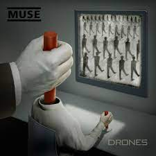
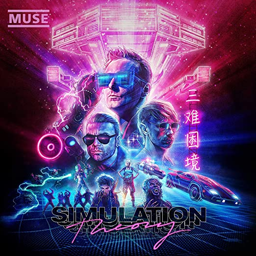

Showbiz
7 de septiembre de 1999- Sunburn
- Muscle Museum
- Fillip
- Falling Down
- Cave
- Showbiz
- Unintended
- Uno
- Sober
- Escape
- Overdue
- Hate This Ill Love You

Origin Of Symmetry
17 de julio de 2001- New Born
- Bliss
- Space Dementia
- Hyper Music
- Plug in Baby
- Citizen Erased
- Micro Cuts
- Screenager
- Darkshines
- Feeling Good
- Megalomania

Absolution
29 de septiembre, 2003- Intro
- Apocalypse please
- Time Is Running Out
- Sing For Absolution
- Stockholm Syndrome
- Falling Away With You
- Interlude
- Hysteria
- Blackout
- Butterflies and Hurricanes
- The Small Print
- Endlessly
- Thoughts of a Dying Atheist
- Ruled By Secrecy

Black Holes And Revelations
3 de julio de 2006- Take a Bow
- Starlight
- Supermassive Black Hole
- Map of the Problematique
- Soldier’s Poem
- Invincible
- Assassin
- Exo-Politics
- City of Delusion
- Hoodoo
- Knights of Cydonia

The Resistance
14 de septiembre de 2009- Uprising
- Resistance
- Undisclosed Desires
- United States of Eurasia (+Collateral Damage)
- Guiding Light
- Unnatural Selection
- MK Ultra
- I Belong to You (+Mon Cœur S'ouvre a ta Voix)
- Exogenesis: Symphony Part 1 (Overture)
- Exogenesis: Symphony Part 2 (Cross-Pollination)
- Exogenesis: Symphony Part 3 (Redemption)

The 2nd Law
1 de octubre de 2012- Supremacy
- Madness
- Panic Station
- Prelude
- Survival
- Follow Me
- Animals
- Explorers
- Big Freeze
- Save Me
- Liquid State
- The 2nd Law: Unsustainable
- LThe 2nd Law: Isolated System

Drones
5 de junio de 2015- Dead Inside
- Drill Sergeant
- Psycho
- Mercy
- Reapers
- The Handler
- JFK
- Defector
- Revolt
- Aftermath
- The Globalist
- Drones

Simulation Theory
9 de noviembre de 2018- Algorithm
- The Dark Side
- Pressure
- Propaganda
- Break It To Me
- Something Human
- Thought Contagion
- Get Up and Fight
- Blockades
- Dig Down
- The Void
